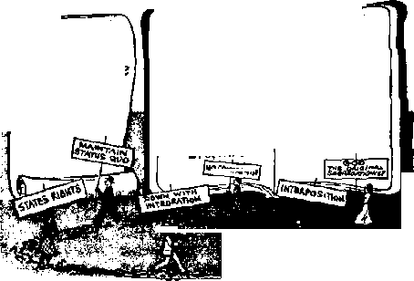
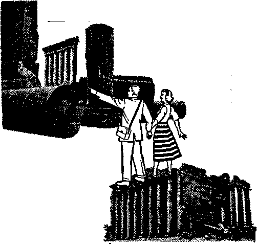
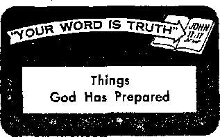

THE MISSION OF THIS JOURNAL
News sources that are able to keep you awake to the vital issues of our times must be unfettered by censorship and selfish Interests. "Awake!" has no fetferr. It recognizes facto, faces facto, to fees to publish facts. It is not bound by political ambitions or obligations; it is unhampered by advertisers whose toes must not be trodden on; it is unprejudiced by traditional creeds. This journal keeps itself free that it may speak freely to you. But it does not abuse its freedom. It maintains integrity to truth.
“Awake I" uses the regular news channels, but is not dependent on them. Its own correspondents are on all continents, in scores of nations. From the four corners of the earth their uncensored, on-the*scenes reports come io you through these columns. This Journal’s viewpoint is not narrow, but is international. It is read in many nations, in many .languages, by persons of all ages. Through its pages many fields of knowledge pass in review—government, commerce, religion, history, geography, science, social conditions, natural wonders—why, its coverage is as broad as the earth and as high as the heavens.
“Awake 1” pledges itself to righteous principles, io exposing hidden foes and subtle dangers, to championing freedom for all, to comforting mourners and strengthening those disheartened by the failures of a delinquent world, reflecting sure hope for the establishment of a righteous New World.
Get acquainted with “Awake!” Keep awake by reading “Awake!”
Published Semi monthly By WATCHTOWER BIBLE AND TRACT SOCIETY, INC, 117 Adami Street Brooklyn 1. N. Y, XI. 9. A.
N. H. Knqrb, President Grant Suiter, Secretary
Printing this issue: 1,650,000
•flier fengiiptt in which “Awake!” la piblblud: SamliMirthly—AMkAtnfi, Finnish, French, German, Hnl^aadlsh, Italltm, Norwegian, Spanish, Swedish. Ninthly—Duaiah, Greek, Japanese, Portuguese. Ukrainhn. .
Offices Yariy mbscriptlcn rate
Amrits, U.S.। 117 Adams St, BrcKiklyn 1, N.Y. JI AsatrallS. 11 BeWord Bd,, Strathfleld, N.8.W-Omata, 150 Bridgehnd Are., Park Rtuvi P.O.,
Tcrtoto 10, Ontario |1
Etfland, 34 Cr^en Terrace. London, W. 2 <7-
Hew leal and, G.p.O. Box 30, WelliagtCHi. C. 1 7/-
Afrka, Print* Big, EJindrfontein, Tri. 7/-
F(v« cents a copy
Hanittanen should be asit to office in your country Is compliance with regulation!; to guarantee safe delivery or money, Remittances are accented at Brooklyn from countries where no office la located, by International money order only. Subscription rates hi different Countries are here elated in. local currency. Wofln of expiration (with renewal blank) te sent at least two Issues before subscription ec-pln». Change *f address when sent to our office may be expected effective within one month. Send your old as Well as new address.
Filtered aj second-class matter at Brooklyn, N.Y., Ad of March 3, 1879. Printed In U.S.A,
|
Man Brushes God Aside |
3 |
Animal Heroes |
20 |
|
The Logic of Belief in God |
4 |
Taking No Chances |
20 |
|
An Intelligence That Excels Man’s |
6 |
Magic in the Kitchen |
21 |
|
An Accurate Testimony |
7 |
Vappu—Finland’s May Festival |
24 |
|
Father Has the Babies! |
8 |
"Your Word Is Truth” | |
|
The Cheetah: Sprinter Spectacular |
9 |
Things God Has Prepared |
25 |
|
Ready-made Muscle |
11 |
Jehovah’s Witnesses Preach in All | |
|
The Attack on Segregation in America |
12 |
the Earth—New Zealand |
27 |
|
The Real Solution |
17 |
Do You Know? |
28 |
|
Baalbek—Town of Baal |
18 |
Watching the World |
29 |
% OLETICAL leaders are ever put-r*’ ting man in God's place: in the I role of a builder of a peaceful new world. Where does this put God? It puts him, his Word and his promises aside as unnecessary.
Oddly enough, this putting of man on a godlike pedestal is Increasing at the very time when human leaders fail to live up to their promises. Listen closely to the speeches of political leaders. You can detect, even in statements that appear to be religious, the theme that man is needed to build a new world without war. Take, for example, President Eisenhower's religious statement in the December 26, 1955, issue of Life magazine: “Religion nurtures men of faith, men of hope, men of love; such men are needed in the building of a new world reflecting the glory of God.”
But wait! Suppose man could build a peaceful new world without God, Would it really reflect God’s glory? Or is it likely that man would pat himself on the back?
You are right. Man would be on the godlike pedestal. God would be brushed aside. That is the way it is now. How many men of power give God any credit or show reliance upon his promises? How many wise men, how many powerful men speak of God's kingdom as man’s hope of peace? Instead they talk as the United States’ Secretary of the Treasury George Humphrey did recently. He called Eisenhower “the outstanding figure in the world today” and the world’s “symbol of peace.”
Religious leaders show the same attitude. They claim to preach God's Word but they trust in men. Clergymen of the biggest religions curry the favor of politicians and even begin to speak their language. Was It a politician that spoke these words —“This will be called the century in which man abolished war, established economic justice and realised brotherhood"? No, it was Methodist Bishop G. Bromley Oxnam who, according to United Press Radio of August 24,1955, told a group at Lafayette, Indiana, that man would wipe out war.
When clergymen and politicians talk like this they put God to one side. What a surprise awaits boasting man when Jehovah God, at the impending war of Armageddon, topples man from his pedestal and exalts himself as the new-world Builder and as the Destroyer of war'.—Y’saiin 46: 8-11, Am, Stan. Ver.
____ everyone believe in ? asked an amazed skep
tic after reading the history of J ancient and primitive peoples.
Yes, the idea of God prevails among all- nations. It seems a trait of the human race. Ancient Judaism raised no question about God’s existence —it was a stated and accepted fact. Early Christians faced no such problem—the existence of Jesus’ heavenly Father was unquestioned. Also, all the pagan nations accepted some form of god. Philosopher Celestine N. Bittie wrote: “No people has ever been discovered which, in the strict sense of the term, is ‘atheistic.’ Individuals may be atheists; but a people, never.” Belief in God has been called “most akin to, if not identical with, true instinct.”
This remains true even to our day. While materialism has many adherents among both the educated and the uneducated, even many scientists—who are often considered the forerunners of materialism—refuse to deny belief in God. When noted British scientists, all Fellows of the Royal Society, were asked whether they credited “the existence of a spiritual domain,” nearly ten times as many said “Yes” as said “No.” And Time magazine, January 10,1955, said: “The universe that once seemed to be clockwork now throbs
with awe-
bcbwt* jn God, yet there tiro
'.ome who (Jo not What (.ire the points of Incjn L ♦hed stand behind those who d some power, before which modern men (including scientists) turn to God.”
Men have worshiped stars, the sun, mountains, other men, idols, governments, political rulers, science and their own wisdom. But whatever man worships, that urge to worship unquestionably is there! It can be subdued, misdirected or perverted, but it must in some manner be dealt with, for it is just as real as are the instincts of hunger and thirst and the desires for love and companionship.
But could earth’s billions be wrong? Yes, it is possible, and therefore surer evidence of God’s existence must be found than the mere widespread belief in this fact. There are many such evidences. Let us examine some of them.
Order and Design
One of the most obvious logical bases for belief in God is the order that exists in the universe. Intelligent order is apparent in everything from the tiniest atomic particles to the farthest reaches of the universe. This wisdom and order could have occurred in only one of two ways: by chance or through intelligence. If intelligence is absent, then chance must explain everything. But if chance could not have
produced the evident Faults, then intelligence must have played its part.
Those who refuse to believe that an intelligent God created must believe that the order that exists in the universe is just an accident, merely the outworking of chance. But it is not just an accident. Too much is involved in the production of the earth and man and the other living creation, in the marvelous laws of nature, the unity and timing of the heavenly bodies, the warmth and vegetation and the light and moisture that keep us alive, as well as the uncountable list of other things that man’s marvelous brain—is it too an accident?—can list and weigh and analyze.
Reasoning men look at the order that is evident in the universe and conclude from it that an intelligent Supreme Being is its only logical source. Thus the existence of order lends to a firmly established confidence in the existence of God. Bittie comments: “The vast majority of people are convinced of the existence of a Supreme Being above and beyond the world, no matter how imperfect their conception of this Supreme Being may be. Usually this conviction has its foundation in a contemplation of the order existing in the universe. Order presupposes design. Design presupposes an intelligent designer. Man’s reason thus makes a spontaneous conclusion from the order of the world to an Intelligent Supreme Being who is the author of the order existing everywhere in nature.”—God and His Creatures, page 80.
So foreign to reason is the belief that all this is merely an undesigned accident that Dr. A. Rendle Short wrote that not even an "impersonal God” would satisfy the indications. “A Mind has been at work,” he says, “with purposes to foresee and to bring to pass, working by laws, and with materials, that we can up to a point understand; it is a Mind that works along the same lines as our own minds, but on a vastly higher level. Andndndis|not something that floats about in space. It is not inherent in a block of granite. It is connected with a personality, with plans, executive ability, likes and dislikes. So it'is not surprising that the Bible quotes God as saying, ‘Let Us make man in Our image, after Our likeness.' ”
The intelligence manifested in the universe is far greater than man’s. Who had this intelligence? Where did it come from? Not from man—it existed long before he ever came into existence. Not from any other visible source, for man has greater intelligence than any other creature that we can see. Surely not from dead unintelligent matter. Then, since the universe bears witness to another mind that is higher, more intelligent, and that existed long before man did, why scruple at calling the Possessor of it God?
Thus, the fact that the universe is not chaos, but is orderly and intelligent in design is one evidence of the simple fact that God exists!
The Great First Cause
Further, whatever comes into existence must have a cause. A building has a builder, a painting a painter, a development a developer. Whatever things begin to exist must have a cause for their beginning. Something that exists must bring them from nonexistence into existence. Whatever comes into existence can be produced only by another thing, not by itself. Thus, as we go back in time we find that each thing that has been produced was produced by something that existed before it. Effects were produced by preceding causes, and this series of causes and effects reaches into the far-distant past.
Whether this series of causes and effects is spoken of as being either finite or infinite in number, the fact is evident that there must eventually have been one cause that
was not itself anted tor any other thing, and that, since it could oat have brought itself into existence, must therefore have existed forever. Philosophers have termed this the ‘uncaused First Cause/ It Just comes down to the fact that since everything that begins to exist must have had a cause for coming into existence, there must have been something in the far distant past that did not begin to exist, that has always existed, that is unproduced and exists of itself. This original Cause that did not begin to exist, that is unproduced and exists of itself, we call God. Thus, God exists.
An Intelligence That KxceU Man’s
Another argument about God surrounds the principle of sufficient reason. This principle, basic to science and philosophy, says that nothing can come into existence without there being an adequate reason for Its existence. The adequate reason for the existence of a child lies in its parents, for without the parents there would be no child. The cause that brings about the existence must at least be equal to or greater than the effect produced. A child cannot be produced by a dog, nor a man by a baby, for in these instances the causes (the dog or the baby) would be less than the effects produced (the child or the man). If the effect were greater than what is contained in the cause, then the effect would not have an adequate cause, and thus could not come into being.
Hie existence of unintelligent, inorganic substances is not a sufficient reason for the existence of intelligent life. The material elements of both inorganic matter and intelligent creatures may be similar, but inorganic matter in no way offers an explanation for the existence of the knowledge, consciousness or of the natural purposiveness that is evident in life. In fact, intelligent life is so new and superior to inorganic matter and to the universe's material foress that its existence can be accounted for only by a sufficient cause octn-pletely outside of all existing matter and even of the entire material universe!
This sufficient Reason for the existence of intelligent life, this mighty Power that has within itself adequate- cause far the existence of intelligent creatures, we call God. Thus, again, God exists!
TAe Greatest Proof
But there is a far stronger proof of God's existence. The greatest proof Is the existence of the Bible itself. The Bible is its own best proof of its genuineness, and if It is seen that this book actually was inspired, then certainly its Inspire? must exist! What are the evidences that the Bible is an inspired book?
First, the Bible is recognized as the world’s greatest moral code. Is it imaginable that the highest code of morals the world has ever seen is a hoax? If its writers were not inspired, then they were liars and cheats, unimaginably unscrupulous and almost magically successful in their dishonesty. But is it possible that widely separated men, writing over a period of more than 1,600 years could have produced a falsified counterfeit sham that has proved to be the most powerful work in the history of the world? No, that is most illogical. The Bible is far beyond the powers of men to produce.
But even further, this book offers unquestionable proof of its genuineness. How? By reliably predicting in detail future events—something no man can do. It contains many such prophecies. An outstanding one concerned the overthrow of Jerusalem A.D. 70. More than thirty-five years in advance Jesus had made the amazing prediction regarding the temple: “By no means will a stone be left here upon a stone and not be thrown down.” (Matthew 24:2, A'cw World Trans.) And,
though the people put their confidence in that temple and the worship carried on there, sure enough, more than thirty-five years after Jesus uttered that prophecy and long after it had been written down in the Bible account Rome’s armies destroyed Jerusalem and left the temple in utter ruin.
Previously, when Jerusalem had been conquered it was later restored to the Jews. But Jesus’ prophecy had also included the fact that at this time die trampling, upon Jerusalem by the nations would continue until the appointed times of the nations were fulfilled. (Luke 21:24) That lasted right down until our present twentieth century! Indeed, this was an amazing prophecy! How could Jesus have known that this unexpected thing would occur? Only through the inspiration he and his disciples claimed to have and actually did have!
“But what about the Genesis account of creation, the Adam and Eve story?” someone asks. Well, what about it? As A. Rendle Short says in Modern Discovery and the Bible (pages 113, 114): “We wish to enter a protest against the modem readiness to discard everything in the Bible which does not immediately fit in with the passing ideas of our own day. Again and again, as we shall see, what has been thought incredible has proved to be historical.” He continues: “The doctrine of man’s fall from innocence to sin, and the doctrine of the Tempter, are both of them basic for Christian teaching as set forth in the New Testament. So, too, the Christian doctrine of marriage is based by Christ on the union in the Garden of Eden. It is, further, a matter of importance that the whole human family is descended from a single pair, and is all of one.”—Acts 17:26.
Further, the Biblical account of creation is far more scientific than many persons realize. The order in which life came into being, eg scientists have demonstrated it, does not necessarily prove their theory of evolution, tor in chapter one of Genesis Moses gave the same order as the order of creation! How did Moses know it? From an earlier record written by Adam himself. And how did Adam know it? He was not there when this creation took place, nor did he have the modem scientific knowledge by which man has discovered such things. The only way he could have gotten such amazing knowledge is through an angelic messenger from Jehovah God.
Therefore, both logic and the Bible’s marvelous power of prophecy combine to prove that this book really was inspired by a Source higher than man. And again ,it is proved that its Inspirer, Jehovah God, really does exist!
An Accurate Testimony
For Christians outstanding proof of God’s existence will always be the person, wordsand works of Christ. Hated, despised and persecuted, he proved through his course of action, through the prophecies he fulfilled and through the prophecies that he uttered that he knew whereof he spoke, and that he was, indeed, the long-promised Messiah! He reliably told of God as no other man could have done, for, as he explained, he had had millions of years of existence with his heavenly Father before ever he came to earth.—Luke 2:49; John 8:58; 17:5.
“But the Bible says he performed miracles!” Yes, he did. What is a miracle? It is defined as "an event in the natural world, but out of its established order, possible only by the intervention of divine power." But surely it is more logical to believe that a miracle occurred by divine power than by no power, as evolution contends of its miracles of existence, life and self-creation’. Jesus’ miracles, his death and his resurrection could not have been just a
myth or legend. The men who saw these miracles wrote them down. They: were clearly written down within, at the most, twenty years of their happening. These writings were widely distributed. People remembered how the events occurred. Men still living had witnessed them. False records would have produced prompt and violent protests.
Jesus changed the course of countless men and women. His influence stands till this day. It was no hoax. It was a miracle! Miracles had corroborated God’s power to the nation of Israel, and they also corroborated Jesus* claims to his ministry. He said: “The same works that I do, bear witness of me, that the Father hath sent me.” (John 5:36) That Jesus performed such miracles proves he is from the Father. That he is from the Father provides conclusive proof that the Father really does exist!
Thus, we have seen that the Bible’s existence as an inspired book proves that its Inspirer exists; that the existence of matter, life and intelligence proves that their Cause, the Creator, exists; that the marvelous order, intelligence, wisdom and design of the universe, far beyond the possibility of mere chance, prove that its Designer exists. All of these evidences combine to give unquestionable proof that God really does exist!
Further, the Bible, God’s inspired coipimplication with us, gives us his name, Jehovah. It tells of his purposes, explains the reason for the existence of wickedness and shows yiat we are living at the time when wickedness will be brought to its end with the destruction of its wicked instigator, Satan the Devil.—Exodus 6:3; Genesis 3:1; Job 1:6-12; Revelation 12:12.
Yes, people of all nations in every generation have believed in a god. But do you want to know about The God who most certainly does exist? The Bible tells about him. You will be amazed at what it says, what you can leam from it, and at the strength and faith that it provides if your study of it is sincere, diligent and thorough. Why not try it and see?
FATHER HAS THE BABIES
C The sea horse is a strange creature of the sea. It looks like a horse hut it is not a horse; it has no hoofs, cloven or otherwise. To confuse matters further, the sea horse often acts like a monkey instead of a flsh or a horse. And in family life father sea horse does the work of a mother. Though the sea horse is really a fish, this creature acts like a monkey by coiling its posterior appendage, which looks like a horse’s tail, around bits of seaweed. There it hangs head uppermost at anchor. The danger in the sea is not the chance of falling to the bottom but of falling upward to the surface. When the sea horse goes for a swim, he travels in a vertical position, swimming slowly and gracefully through the water by movements of semitransparent fins. Only in the Pacific where there is giant kelp in which to hide does the sea horse grow to as much as a foot in height; elsewhere it lives out its life only a few inches high. For father sea horse it is some life—he has the sole responsibility for the babies. In the breeding season the male develops a pouch like the pocket of a female kangaroo. Mother sea horse deposits her eggs in papa's pouch. There the youngsters stay until they hatch. When the babies emerge, it looks as if father were giving birth. On the happy day the proud father may have up to 400 "colts,” about the size of this (}) comma. After that, though, papa sea horse thinks he has done enough and leaves the young to shift for themselves.
A CAT that can travel as fast as a train—that is the extraordinary creature called the cheetah. King of cats this animal is when it comes to running. Even the fion is a tortoise for speed when compared to the cheetah. King of mammals he is too, for even the race horse'is made to look much inferior when this fleet cat puts on a burst of speed. How incredibly fast this nimble creature is, how it is used to provide venison for the dinner table of its master and how it is tamed and trained make up the fascinating story of nature’s sprinter spectacular.
What a handsome creature this cheetah is! Tawny in color and spotted with black except on the throat, the cheetah gets its name from the Hindu word cita, meaning "hunting leopard,’’ which in turn comes from the Sanskrit word citra, “spotted.” Oddly enough, this spotted, leopardlike cat is not really a true cat. The cheetah has many features that belong to dogs, not cats. Yet, though if is not quite cat, the cheetah is more cat than dog. So to keep matters from, getting this
sprinter extraordinary is called by most people a cat.
Interesting are the doglike features of this cat. Instead of having claws that can be retracted or drawn back into little sheaths of skin in the manner of all true cats, the cheetah is unable to work his strong and blunt claws freely in and out. His claws are like those of a dog. So is his body form. With a small head and a lean and slender body, this feline speedster lacks the round contour of thft taS. V'i’ite. Tver, Vnere are those long legs, giving the cheetah the appearance of a greyhound. But what the greyhound knows about speed the cheetah has long ago forgotten.
Hunter with Hair-Trigger Speed
The cheetah may embarrass the cat family by showing other members up as slowpokes and also by what he does with his tail. Instead of hanging it modestly in the generally approved feline manner, the cheetah often points it straight out from his body two and a half feet. One is tempted to make a “pointer” out of him. In disposition too the cheetah is unlike the lion, tiger or leopard, but is more like a dog. A trained cheetah regards its master as a friend to be trusted and obeyed at all times. And even as the dog performs services for man so does the cheetah. Since the days of ancient Egypt and Assyria this rwSt ■sprinter Yas "been used tor hunting
purposes. And no wonder! The cheetah has hair-trigger speed.
When a cheetah spies a delicious-looking antelope, the cat
ease of a greased eel. So ho time need be lost in the process of acceleration, for the loss of a second may be the loss of a meal. From a standing start a hungry cheetah in a robust condition is said to be able to accelerate to the rate of 45 miles an hour in two seconds. In this detail the streamlined train of man’s making is hopelessly outclassed! And so is a first-class human sprinter, for in two seconds a man can reach a speed of only 16 miles an hour. Of course, at full speed man is also a snail to the cheetah. When going all out, as in the middle of a 100-yard dash, a man can reach only 24 to 25 miles an hour. But the cheetah, when in full stride, can cover 103 feet in a second, which is about 70 miles an hour. There are even claims that some nimble-footed cheetahs have hit 80 miles an hour. But whatever the numerical speed, a cheetah pursuing an antelope appears almost to fly. One can hardly believe that any animal in existence can move so fast and so smoothly.
In the wild state cheetahs lie in concealment until their prey is near enough to be caught in a fast-flying dash. This is necessary, since what the cheetah has in speed it lacks in endurance. So top-speed runs have to be limited to just a few hundred yards, about 600 at most. Upon overtaking the antelope, the fleet feline knocks the antelope off its feet with a swipe of a forepaw and then seizes it by the throat with his teeth and pulls it down. It seldom releases its grip on the throat until the animal is dead.
Hunting for its Master
Those who use cheetahs for hunting, such as some Indian princes, take the cat to the field on a low car. The cheetah is hooded. When a herd of antelope is seen, the car is usually brought to within 200 or 300 yards of the game before the animals take alarm. Then the cheetah is released from the hood, which it fully understands is the signal that game is sighted. The cheetah then dashes off like a cannon ball to 'bring home the bacon’ for his master. Although running for his very life, a fleet antelope seems slow by comparison, though the antelope may be traveling 45 or 50 miles an hour. But the cheetah, with his legs now a blur, becomes a streak across the plain. After overtaking the Indian antelope (something no dog can do) and knocking it down, the cheetah holds it until the master or his attendant comes up and kills the buck. He cuts the antelope’s throat, collects a ladle of blood and rewards the cat with a drink so that it will release its hold. Later the hungry cat receives a portion of his kill for dinner.
An American who was the guest of an Indian prince wrote an eyewitness account of a cheetah going into action: “The leopard sprang in pursuit, selected his buck (the largest and blackest one) and then started gathering speed in a series of long, low, gliding leaps. He was timing his run, setting a pace, and gauging the distance. The buck, confident of his speed, was not yet going 'all out.’ The long leaps of the cheetah grew into a ripple, while the intervening distance quickly shortened. The buck was now alarmed and was putting all he had into a spurt, but the cheetah had timed his run, saved his wind, and counted on the spurt. He also went all out, and what had appeared like a speeding rippie was now a straight line hurtling toward the buck so fast that it appeared as if only one object were moving. The cheetah was doing close to 70, possibly 80 miles an hour, and looked like a blur of brown against a tan background. The brown object and the black object came together. The cheetah’s paw struck out; the buck dodged, and turned, and was now racing back directly toward us. The buck was fast and powerful. Twice more he dodged the cheetah. Then, almost in front of us, the pursuer struck again. The front paw with claws extended hit the buck’s hind leg a side blow so that one back leg tripped over the other and the buck went down in a cloud of dust.”—National Geographic Magazine^ February, 1942.
Training and Taming the Cheetah
Man’s training, of course, does nothing to improve on the cheetah’s hunting ability. The cat just uses its natural instincts. But the sprinting feline is trained in several ways. For example,' the cat is trained to pick out and run down only bucks, not does. If the cheetah runs down a doe he gets no dinner and soon learns to go only after bucks. Since the cat’s full natural abilities are required, only mature cheetahs are captured and trained for hunting purposes. The process of taming and training may take about six months. Strange indeed is the taming process. Starved and tired, the newly caught cheetah is kept awake and subjected to constant talking. Someone talks to him continually, usually a woman. But it takes more than one scolding woman to nag the big cat into submission. Worn out, the women must take turns until finally the cheetah’s ferocity disappears and the cat becomes docile and gentle.
Properly trained cheetahs are expensive. Even so, a few have been sent to the United States, where, in the Southwest, they were put to work killing coyotes. The big cats did the job admirably; in fact, so well that the cheetah proved to be the only spectacularly successful means of exterminating coyotes. But if enough trained cheetahs were purchased to make a sizable dent in the number of coyotes, It would put a burden on many a rancher’s pocketbook; for a pair of cheetahs are valued at about $5,000.
The cheetahs’ value as hunters and speedsters should not be allowed to eclipse entirely their value as pets, since the master of one of these big cats finds it a source of positive pleasure. Fond of those who are kind to him, the cheetah gives evidence of his attachment in an open doglike manner. He enjoys caressing pats, often lives in the house like a house dog and even sleeps on his master’s bed. The idea of a leopard-sized cat sleeping on one’s bed may not appeal to many people, especially to those whose sleep might be disturbed by the too-hearty purring of a huge cat. So, though the cheetah is doglike in its trustworthiness and in some manners, it is also catlike in its ways. Just as a pussy cat rubs up against one’s feet so the cheetah rubs himself against his owner’s knees, purring all the time like so many large cats.
So even if he were not nature's sprinter spectacular, it seems that the cheetah would still be chosen by some people for a pet But cheetahs are scarce, living only in a few scattered sections of India and Africa, Besides they are expensive. Still, an animal lover cannot help but dream of how a human who likes both dogs and cats would respond to a pet cheetah. Here all in one splendid creature are combined the friendly loyalty of a dog and the purring mannerisms of a cat.
JQea.d.y-m.a.de Muicle
C In New Orleans a police sergeant glowered at a burly young man being booked for a traffic violation. "He looks like Rocky Marciano,” the sergeant said. When police stripped the young man they found that clothes—fifteen sweaters, shirts, and undershirts, in addition to ten pairs of pants—had built a 137-pound. lad. up to a heavyweight Explained the youth: "It made me feel tougher.”
The Attack
on
in
America
The racial situation prompts one of the world's major prob/ems. Titit article presents the American racial problem, its scope, what is being done about it and why it is feared by so many.
J. las i less than a H ago actual slaver the order of the day in a great part of North America. It did not legally come to an end until the rati-
numbers of Negroes were brought into industry, both North and South. Yet these changes were only the beginning of what has happened since that time.
In 1944 the telephone companies began hiring Negro billing clerks and switchboard operators. The next year New York enacted the first state fair employment law, guaranteeing equal working rights to people of all colors and religions. In 1948 the president of the United States declared equality of all races in the armed forces. A year earlier Jackie Robinson had
fication of the thirteenth amendment to the United States’ Constitution on December 18 in the year 1865.
What makes this seem so amazing today is that during the past few years white Americans from all sections of the country have served side by side with Negroes of equal or even superior rank in the armed services. They have read historical novels by Frank Yerby, have cheered Negro players at major-league baseball games, have competed with them on top college football teams, have helped pay their salaries as leading entertainers, and have seen them appointed to high government posts. One serves as an adviser to the president and another is an undersecretary of the United Nations.
How did this change come about?
It was especially during and after World War I that many Negroes were drawn northward to work in manufacturing plants at higher wages and under better conditions than they had known before. Far greater changes occurred during World War II, when increasingly large become the first Negro baseball player to join a major league team, and Negro illiteracy had dropped to barely eleven percent—among the young to less than half that figure.
The Supreme Court played its part. It said that qualified Negroes could not be denied the right to vote in so-called “white Democratic primaries,” then ruled against segregation on interstate buses, in railroad diners and in various state-supported universities. Then in 1954 it declared that legally required segregation in public schools is unconstitutional, on the grounds that any kind of segregated education automatically is unequal education. In 1955 it said the schools should move with “deliberate speed” on integration, but left it up to the lower courts as to just how this should be done. By October some schools had been desegregated in seven states and the District of Columbia.
But not all is peaceful racially. Those who fear the trend’s results have risen to battle. Opposition to integration is strong,
vigorous, heated with fear and emotion. It is possibly tile most divisive issue in America today. No simple solution is in sight Birmingham's city commissioner Wade
Bradley said that permitting Negroes in public parks would “lead to bloodshed.” Letters to the editors of Southern newspapers even blame God, saying, in effect: “He would not have made the white man white and the black man black had he not intended it.” Politicians call those who say the Negro’s advancement is a necessary part of democracy "conscienceless pressure groups who are attempting our destruction.” Others consider the Supreme Court an “enemy” composed of “political shysters.” And the National Association for the Advancement of Colored People is accused of being “Communist-led,” and of seeking to “mongrelize” the races.
Georgia’s Governor Marvin Griffin, in protesting a Georgia Tech football game with a team that had a Negro player, said: “The South stands at Armageddon. The battle is joined. We cannot make the slightest concession to the enemy in this dark and lamentable hour of struggle. There is no more difference in compromising integrity of race on the playing field than in doing so in the classrooms. One break in the dike and the relentless seas will rush in and destroy us. We are in this fight 100 per cent, not 98 per cent, nor 75 per cent, not 64 per cent—but a full 100 per cent.”
These are not mild expressions. There is fear in the South. The Negro’s advancement in the North adds to that fear, and Southern organiza
arc ? created equal.
tions are springing up to keep segregation just the way it;is. Among such groups are the widely publicized citizens’ councils, which make known which Negroes have tried to register as voters or have petitioned to have their children admitted to white schools. In at least one area in Mississippi such Negroes have not been able to buy food, receive credit, or supply their small stores with merchandise. Some have been fired, many have moved away and few if any names remain on the petitions.
The Two Issues
There are two sides to this picture, as there are to all such issues. In a nation where the Declaration of Independence calls it a self-evident truth that “all men are created equal,” it is a fact that not aB men have been granted that equality. Southern whites fear that they will be overwhelmed by the Negro majority. Southern Negroes fear that they will lose hard-won rights. The whites fear the natural tendency of people who have been held down for a long period of time to “get even” with those who have held them in subjection. Yet, as in many other places in the world, those who have long been
BIBLE
“God U not partla].”-—Acta 10:34, MF.
“God does not go by a man’* outward appearance?’—-Gal.
2t6,MF.
Declaration
Independence
**God .. i made out of one man every nation of men, to dwell upon the enrtre surface of the earth.”—Acta 17:24-26, N1F.
held in subjection are demanding a change.
As Time magazine put it: “In the mid-20th century it became a fact of life that millions of U.S. Negroes could not feel themselves clothed in the minimum dignity of men as long as they suffered under certain legal disabilities. And millions of Southern whites, with an intensity perhaps equal to that of the Negroes, resist the change the Negroes feel they must have.”
The South points to different social customs, to the higher rate of illegitimacy, to the different habits of cleanliness and even to the different crime rate that often is evident between the two races. And as one South Carolina woman put it: "I want the Negroes to have what is right, but I am anxious to do the best for my own.”
Some Southerners say that the difference in cultural and educational background in the deep South would segregate many students, even if both races met in the same classrooms. But the responsibility for this condition does not rest solely upon the Negro. People who for generations have been held in subjection certainly could not raise their financial, educational and social standard unless at least granted the opportunity to do so. And the Supreme Court’s contention was that they must be given that opportunity, at least in public education.
Sex also rears an ugly head in this matter. As the noted Southern editor Hodding Carter pointed out, Southerners “read the warning literature of the Citizens Councils and the sex-ridden pamphlets and leaflets of psychopathic hatemongers, and the gleeful text and pictures in Negro national publications, all dwelling upon the threat or the reality of racial intermarriage, and they grow no less afraid. . . . They hear the injunction to the Negro to use the ballot as his weapon, and they look at the state’s heavily Negro counties, where no or almost no Negroes now vote; and they vow to keep things that way..,. All the time they are conscious that time itself is running out on them. .... It is not reassuring to have a sober-minded friend say that he has put a curfew on his wife and daughters for fear of racially motivated violence.”
It is true that the present Southern generation did .not originate the problem; it inherited it. But*this does not change the fact that the problem exists, nor does it mean that the problem can be ignored. The South might deal with it in several ways, but, however it deals with it, this problem is just as insistent as are similar ones that exist where the tides of change are in flood in colonial areas the world over. No court ruling alone wilj change such a situation. Only education, gradual development of trust and the mutual respect that comes from a real sense of responsibility on both sides can help solve it. And it is much easier to speak of these things than it is to develop them.
The Retreat
However, not all the South is of one mind on what should be done. In the “border states,” actually a part of the South, but where the percentage of Negroes may not be so great, the barriers are breaking down. And even in the Deep South itself, where integration seems entirely out of the question, there is sign of change. When Georgia’s Governor Griffin protested Georgia Tech’s playing in a nonsegregated game, Tech students promptly burned the governor in effigy, demonstrated in front of his mansion and smashed into the capitol. One noted newspaper commented: "Rioting Tech students chose a reprehensible method of expressing their sentiments. But the Incident suggests that the younger generation in the South is more possessed with football than obsessed with undeviating segregation.”
It has been observed that the South's views on segregation are often the mildest among the younger generation, whose members have served with Negroes in integrated military units or have associated with Negro students in Southern universities or have competed with them in athletic contests. Their world did not collapse, though some of their prejudices may quietly have fallen apart.
The retreat of segregation is seen in other ways too. Visitors who have not been south for five years or more are amazed to see Negroes in railroad diners, sleeping cars and in the coaches of some fast trains. And in the border states they are seen in formerly all-white schools. Eighty-five percent of Missouri’s children have been integrated. Almost all of West Virginia’s fifty-five counties have begun to remove racial distinctions. Oklahoma has more than 250 schools with mixed classes. Delaware has 1,230 Negro students in mixed schools and Maryland has 4,000. Sixty-five of Texas' 1,800 school districts have been integrated.
But it is still true that this integration is in areas that have the smallest percentage of Negroes. In Texas, for example, not one integrated school district is in the eastern part of the state where the percentage of Negroes is the highest Where the number of Negroes approaches anywhere near to forty or fifty percent of the total, the fight against integration is and will, at least for a long while, remain a no-quarter battle. Some Southern states have considered abolishing public schools, assigning pupils to particular classes, providing money for parents who wish to send their children to private schools, or interposing the authority of the state between the federal government and the people.
Yet with the federal government’s having taken a strong stand on the matter, having integrated the armed services, stated specific principles regarding segregated transportation, schools and other fields, and with its having appointed capable Negroes to official government positions, the recognition of such competent Negroes as first-class citizens probably will continue to grow—no matter how great the opposition and fears of such change are in some parts of the South. As the Atlanta, Georgia, Constitution said in December, 1953: "Segregation by law is finished . . . the problem of the future is how to live with the change.”
But some people may protest: "Racial attitudes just cannot be legislated." Yet it appears that they can be. Prejudice will not disappear presto by judicial decree— the problem is too great for that. But national leadership does have a great effect upon the views of most people. The New York Times’ report of racial prejudice in the West fit is not just a Southern problem!) said of state anti-discrimination laws: "Where efforts are made to enforce such laws, discrimination has lessened. And some of the most conspicuous progress against discrimination has been made In states where there has been the strongest legislative pressure.”
The TUI Case
Examples of both the accomplishments and the shortcomings in the American racial situation were contained in the highly controversial Emmett Till case. Emmett TiB, a 14-year-old Chicago boy visiting in Mississippi, was said to have rolled his eyes and whistled at Mrs. Carolyn Bryant, a 21-year-old white woman. Afterward 'Dll was kidnaped by two white men. Three days later a horribly beaten body, swollen and decomposing, was found in the muddy Tallahatchie River. Mrs. Bryant’s husband and his half brother, J. W. Milam, were accused of murder.
The very fact that those accused of the
crime were brought so swiftly to trial was a major accomplishment Mississippi reacted with sincere expressions of outrage. Newspaper editorials denounced the killing, demanded justice and warned that segregation could be justified only if equal justice was granted to all. The governor assigned a capable lawyer. The judge presided with dignity and fairness. No witness was intimidated. Indeed, there was the unustfel spectacle in Mississippi of Negroes boldly testifying against white men.
Bryant and Milam claimed they had let Till go after learning he was the wrong boy. His mother identified the body as her son. On its finger was his father’s ring. The defense replied by producing witnesses who said the body could not have been Till's because of its advanced decomposition, then bore down on the racial angle, suggesting that “outsiders” had “arranged” for the body to be identified as Till’s in order to help destroy “the way of life of Southern white people.”
Till’s act had a sex background, the touchiest of all racial issues, and not many people really expected the all-white jury to find the two white men guilty, at least not when some question was raised as to the body’s identification. Yet there has been no clamor to find out whose body it was that was found in the Tallahatchie River, or if the body was not Till’s to find out where he is, dead or alive. However, whatever the merits of the murder case, there remains the reportedly admitted kidnaping—in itself a severe crime.
The grand jury refused to bring Bryant and Milam to trial on the kidnaping charge. The Memphis Commercial Appeal, which circulates in west Tennessee, Arkansas and Mississippi (an area that has one of the heaviest Negro populations in the United States), said that this refusal does not “represent the American concept of justice. . . . Action of the grand jury actually means that citizens of a state have agreed that under certain circumstances they will not require accused persons to face trial, even after those persons have admitted that they invaded another man’s house, and that they took by force a person from that house.” Thus, men who are reported to have admitted a brutal kidnaping, guilty or not, will not be required to answer for it.
The University of Alabama Case
More than a hundred colleges and universities in Southern and border states now admit Negroes. Their presence is taken for granted and rarely does a raised eyebrow mark their coming or going. This did not come about through evolution, however, but through the hard fact of court decrees. Yet none of this is in Florida, South Carolina, Georgia, Mississippi or Alabama. A recent court decree regarding one of these states ran headlong into local violence, and has stirred even more racial hatred.
The courts said that the University of Alabama must admit Autherine Lucy despite her race. A 1,000-student demonstration rose up in protest. Though some of the students may have been letting off midwinter steam, it is also clear that the demonstration does represent the temper of a great number of Alabamians. Soon town toughs joined forces with the students who wanted trouble. Eggs, rocks and mud were thrown. A three-hour siege was laid to the building in which the Negro woman was attending classes. She was suspended by the university, and the matter went back to the courts.
The race relations in the university town of Tuscaloosa had turned into a dark current of hate and fear. Yet the fact that not everyone was of the same mind was pointed out when 500 students, or about one out of every fifteen members of the
student body, dgned a petition asking that she be reinstated.
On February 29 the court ruled that the university must reinstate the Negro woman. She said she would return, even though violence was feared, but the university promptly expelled her for having charged the school officials with being guilty of misconduct in connection with the riot Her attorney had admitted inability to substantiate these allegations and had said it was “a mistake” to have made them in the first place.
The Real Solution
“God, the original segregationist,” read one of several placards carried by a group who assembled at the Tennessee state capitol last January to protest any action toward school integration. But God had nothing to do with it Rather than segregating men, the Bible says God “made out of one man every nation of men, to dwell upon the entire surface of the earth.” (Acts 17:26, New World Trans.) Skin color results from inherited genes, as do hair color, color of eyes, shape of nose, and so forth. All the types of men who live on earth today could have sprung and did spring from inheritance factors placed in the original man and woman by the Creator. Thus, saying that God segregated by skin color is like saying he separated blueeyed people from brown-eyed ones, or blonds from redheads! The only segregation God made was according to language, and that at the tower of Babel, so the only segregation that could be attributed to him is according to language, not color,* —Genesis 11:5-9,
What is the true Christian’s view of segregation? Christendom’s churches have taken many different views. But which is right? The fact is that true Christians
* For a further discussion of this point see ‘‘Myth of the Black Curse/’ Awake! February 22, 1956.
must have no distinctions among themselves: “There is neither Jew nor Greek, there is neither slave nor freeman, there is neither male nor female; for you are all one in union with Christ Jesus."—Galatians 3:28, New World Trans.
However, true Christians of both races know that the only real solution to the old world’s many social problems and injustices will come not in man's way, but only when Jehovah God, through his Son Christ Jesus, abolishes all the fears, inequalities and injustices of Satan’s old world and replaces them with the blessings of God’s righteous new one. Thus, rather than embroiling themselves in political agitation on behalf of their own or some other race, or kicking against the established system, they put their efforts into the far more important work of preaching the good news of God’s kingdom to all people— showing them the blessings that will come through God’s direct intervention, but not in man’s way. This, too, is in harmony with the example set by the first-century Christians, who while recognizing the need for brotherly love among themselves were too busy with the more important spiritual matters to step over into the field of social reform,*—Philemon 8-22; 1 Timothy 6:1, 2; 1 Corinthians 7:20-24, New World Trans.
And since God’s kingdom is the only thing that really will solve all social injustices, whatever they are, Jehovah’s witnesses, who show this true love among themselves and toward others, urge the suffering people of all races and nationalities to work for that kingdom, looking to the permanent peace, blessings and just provisions it will make for the true happiness of all mankind.—Matthew 6:10; 2 Peter 3:13; Isaiah 2:2, 3.
* This Is discussed In detail in The Watchtower, February 1, 1952, pages 94, 95.
BAALBEK
By "Awake!" conesponjent tn Lebanon
-Town of Baal
BAALBEK!
Literally, “town of Baal,” and chosen home of the sun worshipers! Indeed a classical spot for tourists who desire to probe into the past and discover the origin of these mighty ruins of Devil worship. Baalbek commands a large part of a fertile plain at the foot of the Anti-Lebanon Mountains. Situated at an altitude of 3,550 Teet above sea level, about fifty miles from Beirut, Lebanon, it today constitutes an important agricultural center of approximately 7,000 population.
Baalbek is one of the most ancient cities of the world, dating back to the times of the Phoenicians in Solomon’s day, and its name plainly indicates that Baal, corresponding to the ancient sun-god Hadad, was worshiped here. Some have contended that Solomon, toward the end of his reign, built a magnificent temple to Baal to please his concubines; but, whatever the origin, after his death the Phoenicians used great skill and art in beautifying the temple of Hadad-Baal, their sun-god, to which thousands of pilgrims flocked.
When the Romans conquered Syria under Julius Caesar in 47 B.C., Caesar was so impressed with the greatness of the town and the devotion of the people to their god Baal that he founded a Roman colony there. Temples were built as perfect in their conception and architectural detail as possible, and surpassing any building of which Rome itself could boast. In order to please the native inhabitants the Romans joined in the worship of Baal under the name of Jupiter, and also adopted the worship of Astarte, corresponding to Venus, the favorite goddess of pleasure.
The city had three gates, great avenues, spacious streets, immense buildings, vast
theaters and a population of about 200,000 persons! The Acropolis, in ruins today, gives proof of the extent of the demon worship that was here carried on. The remains of three main temples are evident: the temples of Jupiter, Bacchus and Venus. The temple of Jupiter
was erected originally on a massive foundation twenty-six feet higher than the surrounding buildings and fifty feet above the level of the grounds of the city itself. It measured 310 feet in length, 175 feet in breadth, and it was formerly enclosed by fifty-four Corinthian columns, of which only six remain today. Each of these was sixty-six feet high and seven feet four inches in diameter!
Gods of every form and description must have been worshiped in these temples. In the two courts leading to the temple of Jupiter a great number of sanctuaries are to be seen with more than 250 niches for idols. Here are to be found the name of the moon-god and emblems of Minerva, Venus and many others. Everywhere are evidences of sex worship that the Romans indulged in. Also, there was a golden statue of Jupiter whose feet the faithful kissed, begging for favors and giving it great devotion.
Eusebius writes of what took place at Baalbek: “At Heliopolis [a Greek name
for this city] In Phoenicia, Venus was worshiped under the name of Hydon which means ‘voluptuousness.’ This cult gave rise to extremely licentious practices. The pagans would gather together at Heliopolis and indulge in most sensuous activities. Men gave their wives and daughters full liberty to express their passions in order to honor their goddess Venus?’ The love of this sensual life and the commercial gain that was received because of the number of pilgrims that flocked to Baalbek every year would explain the hatred that these Romans had for Christians, who preached a clean way of life.
Recent excavations and research have also given evidence of the worship of a triune god: Jupiter, Venus and Mercury— three gods in one as the sun-god, the source of all light and life. Archaeologists draw this conclusion from the inscription repeated on the bases of the three columns of the propylaea of the temple.
hi the city’s walls are blocks of stone that measure more than sixty feet in length, about fifteen feet in height, and weigh roughly 750 tons. Fifty such stones placed in a row would measure more than a half mile! Yet, in spite of their immense size, these stones are so accurate in position that not even a needle or a piece of paper can be inserted between them! Where were these gigantic stones obtained? No doubt from a quarry a short distance outside the town. At the entrance of this quarry lies what is called “Hajar-el-Hobla,” an enormous stone weighing about a thousand tons. It is hewn and squared, but not all detached from the rock. It has been calculated that 40,000 men would be needed to move it to the temple! How was the moving of such great stones accomplished?
So far, archaeologists can find no definite answer. Some say that special machines that we do not know of today might nave oeen used; others say an incuned road was built and the stones were rolled down on wheels to thetemple and lifted with a great cranelike machine. However, today there is not the slightest trace of such a road to corroborate this theory. The conclusion must be that much slave labor was used; no doubt thousands gave their lives in the construction of Baalbek. In view of the accurate position of these stones and the height at which they were placed, it is easy to understand the local legend that giants built these majestic monuments.
Baalbek was still flourishing in the time of Constantine. He built a church of fusion religion there, and later Theodosius the Great converted all the temples into churches. The city suffered fires, floods and conquerors, and was finally impoverished by wars and was completely in ruins by the sixteenth century.
So Baalbek, mighty town of Baal, chosen home of the sun worshipers, became a relic of the past, and a historical study for archaeologists and tourists. Once so prosperous as to be the seat of Phoenician Baal worship and venerated by the Romans in their worship of Jupiter, Venus and Bacchus, today it lies in ruins. However, it still holds religious significance. Among its 7,000 inhabitants there are Shiite Moslems, Sunnite Moslems, Greek Catholics, Maronites, Greek Orthodoxists, Armenians and Protestants.
Then, too, Jehovah’s witnesses are seen preaching in the homes surrounding the ruins, telling these people of God’s glorious kingdom, of the blessings it will bring, and of the fact that under it, not just the worship of Baal, but every trace of devil worship will soon be wiped from the earth. The good news that they bring is that soon Satan’s entire old world will become a forgotten ruin, and that only the righteous conditions of peace will then remain.
trtever named Jill began sinking In midstream
while retrieving a pheasant from the river seven feet deep and thirty feet wide. Punch, a Labrador, leaped Into the icy stream, swam out to JJ1, seized her by the nape of the neck and towed her to Jie bank. Then Punch swam out again and retrieved the pheasant that Jill’s master had shot down. The London office of the Royal Society for the Prevention of Cruelty to Animals said that its records contained r.o example of one dog’s having rescued another from drowning.
SotWJ a Life
C At Toronto a fhree-year-old girl accidentally locked herself in a discarded icebox. Unable to find her. the mother called police, who searched the water front near her home. All in vain. Six hours later a boy noticed the girl’s pct dog would not leave a veranda a block from her home. The icebox on the veranda was opened and there was the youngster, fast aslwp.
JiOtd b? NfnJty Psmt
€ Tn the Jamaica Estates section of New York dty three bandits forced their way into the home of Percival Sherron. They forced the man and his wife into the kitchen. But here Polly, the family’s pet parrot, Look over. She let out a series of ear-splitting screams. It caused enough confusion to give Mrs. Sherron a chance to slip out into the street and do a Ui tie screaming of h*r own. This was too much screaming for the bandits and they took off for the tall weeds. But the police got there soon afterward, snd iwo
of the thugs found themselves behind bars— all because of a parrot,
Hrroe* in a Strange Dram*
< Near Umatilla, Florida, farmer Herbert Jones, who lives alone, fell from a pruning ladder in his pecan grove and broke his back. He lay ihere paralyzed. But two animals come to comfort him: his pet brown dqg and pet black snake. The snake, which he had taught the dog to play with, lay beside him while he fought delirium, pain and thirst. After tlx? second day the dog knew something was wrong and left him only to make trips to the water pail, returning with drops of water on his tongue for his master to lick off. “I kept saying, ‘Water, Cocoa, water’ - -I must have said it inn thousand thnefr—and he Anally went to the pail,” explained Jor.cs after a visitor found him five days after his fall. Of hjs dog farmer J chips said: 'die saved my life.”
Fftmiatim for 9 Pigeon
4 During the Korean war the United States army used homing pigeons to send messages when other means of communication were not safe or available. One day Homer, the homing pigeon, while carrying a message from a Fortieth Division command post to the rear, developed wing trouble and had to make a forced landing. Though Homer had to hobble over a rough terrain for a distance of some two miles, he never gave up; he delivered the message. “For initiative and loyalty," said an army spokesman, "Homer has been promoted to pfe pigeon first class.”
TAKING NO CHANCES
The owner of a slot machine in Chicago, though expecting his customers to take chances, was taking no chances himself that his customers would hit the Jackpot. When the Cook County sheriff seized his "one-armed bandits” he took some of the machines apart and was amazed to And one of them wired to pay the owner 100 percent- the player never had a chance.' On another machine the sheriff found instructionfl to keep the coin insert slides W'ell oiled—"but use no oil or grease on the pay-out slides.”
becom-g increasingly difficult these days for the husband
roasted partridge. Only one neat incision is made, the bones are removed without cutting the flesh, seventy percent white meat and thirty percent dark is stuffed back inside the skin, which is then sewed together. And the boneless turkey is born. The pressed duck that has become celebrated to the point of banality is roasted, the breast fine sliced and the remainder of the bird crushed to a liquid through a special press. It is then combined with red wine and brandy and sprinkled over the well-seasoned breast. Exquisite to distinguish the character and personality French dressing is being flavored with of his meal. “Um-m-.T,” he says, "these J Irish moss; meringue is made from underpork chops are simply delicious." “I’m soy- / sea plants; and creamier, smoother, tast-ry,” says his pretty wife, "I forgot to till' ier ice cream is made from vegetable fats, you. Those are not pork chops. You're edt-. The only way to distinguish the vegetable ing fish.” "Fish:” “Yes, you see, fish can be product from the dairy is by reading the bought today that tastes like pork chops or prices. Surprisingly enough, it costs only any other meat. Pork will soon taste J ik<j ,about half as much.
shrimp and shrimp like wild duck. Do yoii " Spearheading this mild revolution in the follow me?” It is rather difficult, but that i ’kitchen is the four-letter word "time.” is just a sample of what is happening to ‘,Sinee the wife nowadays often not only food. .iiteeps house but brings home some of the
Today foods are frozen, synthesized*/ ^acon, little or no time remains for her tubed and dehydrated. They are botth canned, sacked and boxed. There are tin and work-saving packaged mixes, re» to-use canned goods and heat-anc|e frozen foods.
For the hurried, harried husband are liquefied meats and vegetables that made into a beef cocktail. Three full glasses of this meat liquid concoction will supply his protein for the day.
There are boneless turkeys and pressed duck. The turkeys are shaped like a football and taste like
f ; fo cook. Despite the number of machines Var.d timesaving devices, like the automatic washers, driers, cleaners, ironers, etc., i" wives still spend the greater part of their ’ housekeeping time preparing meals, serving them and cleaning up afterward.
As early as 1889, manufacturers began to rally to the side of the female to lighten her load. Pancake mixes began to appear on market shelves. These were followed by gingerbread, biscuit, pudding and ice cream mixes. Canned and o ready-to-serve foods began to
pop lip here and there. But it was not until after 1945 that frozen and heat-and-eat foods began to catch on. The can opener has done more than just open cans, it has actually opened a new era for the housewife. It is a sort of time machine, subtracting months of hard labor from the calendar and giving the housewife foods that are scarce at the time she is fixing a meal.
The Encyclopaedia Britannica says: “The method of preserving food in tins or other containers is probably defensible as the greatest of all inventions in historic times.” Last year alone a stream of over 22 billion cans of food was opened in the United States, a daily average of about two cans a family. Over five million tons of com, snap beans, lima beans and tomatoes were packed into these cans. The wife has over 60 different kinds of soups to choose from, and baby foods alone stretch into another 50 varieties. Sales in canned baby foods run into the hundreds of millions of dollars each year.
Frozen Foods and Cake Mixes
Twenty years ago there was only one frozen-food packer, now there are more than 1,000 supplying half the grocery stores in America with more than 250 different frozen items. In 1950 sales averaged ten pounds a person, today they are estimated to be over five times that amount. Some 200 varieties of prepared mixes now crowd the grocery shelves. Nearly one billion pounds of assorted grains have been rolled, flaked, shredded, popped and otherwise mauled to make ready-made cereals for only two manufacturers who have grossed $227 million in less than a year’s time. The old pioneer breakfast that consisted of steak, pork chops or lamb chops, fried potatoes, fried apples, hot cakes, fried eggs, pie and other items, all in huge quantities, has dwindled down to a bowl of cereal and a cup of instant coffee. Eighty-five percent of the families in the United States serve such cereals and an enthusiastic fifty percent eat them every day.
Frozen juices, which trickled onto the market about eight years ago, have gey-sered into the largest of all frozen food packs. Housewives now buy as much frozen juice as they do fresh fruit. Dehydrated juices, assorted cheeses, meats and readymade whipped cream that never sours are on shelves. Swedish housewives have been using dehydrated butter. And the butcher shop features dehydrated steak that keeps its fresh flavor over a long period of time and needs only to be dipped in water and broiled in the usual way. When housewives apply the ingenious preparation “Charcrust” to the steak, chops, fish pies, potatoes or hamburgers, it makes them taste as if they had just come off charcoal embers.
Nearly a third of the United States’ cake-serving housewives use cake mix regularly. About seventy percent of them have tried it. Mixes are of great variety, and the description of their preparation sounds so simple as to make a trip to the bakery store, by comparison, a major chore. And Consumer Reports says: “It’s almost as simple as the advertisements claim.” Using mixes cuts preparation time drastically. And what is more, they not only assure results as good in shape, volume and general appearance as in homemade pastries, but also will match them in flavor, in good texture and fine-grain structure. Now comes the last word in streamlined baking—ready-mixed dough. Nothing is added. All you do is place the mix in the oven and when the bell rings take out your pretty-as-a-picture pie, muffins or rolls, whatever the case may be. A Michigan State College survey revealed that it cost about 60c to make a devil’s food cake from scratch the old-fashioned
way and only 38c to make one from mfac and milk. You not only save money but it takes only a fraction of the time to make.
Tamorroufs Dinners Today
Perhaps the fastest developing idea to take over the kitchen is the frozen precooked complete meal. It is so popular that experts say that “it may soon make cooking a vanishing art." Dinners prepared by famous chefs from world-famous restad-rants are being shipped to supermarkets around the world.- This means that the most exotic delicacies served in France, Italy or any other country can be enjoyed now in the quiet of one’s home. The only work involved is to heat and serve. De luxeclass dinners might feature fancy fares like the Chinese rice bird, guinea hen, chukar partridge and bobwhite quail. The frozen precooked meal tray makes it possible to eat imported Chinese chow mein, Italian ravioli and Mexican enchiladas, or brook trout from Denmark, frog legs from Japan and lobster tails from South Africa. A precooked meal tray may begin with Mallard duck soup, pheasant, cooked wild rice, com relish and wild cranberry jelly. It may also set you back a crisp ten-dollar bid.
Airlines and railroads are already making good use of the frozen-meal tray; so are restaurants, for that matter. The Rock Island Railroad offers a choice of fifteen different luncheons and fifteen dinners, ail frozen and precooked. Macy’s in New York imports at least ten different French national dishes. The dinners, containing everything from a cassoulet of goose meat to a dish of kidneys in wine sauce, are prepared in France and frozen in aluminum foil. A British restaurant chain freezes and precooks complete tray meals and sends them to its cafeterias all over England.
Those who cannot afford the more expensive meal tray can find practically everything cookable, complete with all the trimmings, in “just-heat-and-serve” packages and cans. More than a billion pounds of meat a year go through meat packers’ kitchens and are prepared for ready use. Also more than two billion cans are used annually in processing vegetables. Among the ready-to-serve canned main courses are panpacked scalloped potatoes with ham and beef stew. Simply apply that remarkable tool, the can opener, and heat.
Something new is the plastic can that permits the wife to have a look inside before buying. The new cans are not only a fifth lighter than glass, but are also unbreakable. The can with the future, however, is the newly patented self-heating can, which cooks without benefit of flame or fire. It is predicted by some enthusiasts that this fancy can may someday do away with the kitchen altogether. It is described as a container within a container. All that is required is to punch a hole in the outer can. The incoming air sets off a chemical reaction that heats the contents of the inner can in about ten minutes.
While tube foods are an old story in Switzerland, they are just beginning to catch on in other parts of the world. Soon supermarket shelves will be loaded down with tubes of mustard, cheeses, whipped cream, butter, assorted fish pastes and sandwich spreads. The tubes themselves are unique. If you press out more than you can use, simply release the tube and the excess is sucked back inside. The tube resumes its original shape.
Because families insist on fresh produce and also want to shop and cook faster, some three and a half billion pounds of fresh fruits and vegetables were prepackaged last year. The shopper merely picks up a transparent bag of spinach or toma-
toes at the fresh-vegetable counter and pays. The vegetables afe already trimmed, washed and weighed.
It might be hard to believe, but despite all these helps, Purdue University sociologists learned in a survey of Midwestern urban and rural housewives, most fulltime housewives have only one or two hours of leisure time each day. Tests have shown that, by using a pressure cooker, canned and frozen foods, ready-mixes and all the other timesavers, the housewife can save up to nine hours a week in the preparation of the noon meal alone. But few housewives have all these conveniences to work with.
And another thing, where the ready-to-serve foods may and do save on time, yet they cost over a third more in money. Many housewives, however, feel justified in paying a few cents more under the magic phrase “household convenience,” in an era that is demanding more and more of them in less and less time.
VAPPU - FINLAND'S MAY FESTIVAL
By "Awakal" corrMpondenl In Finland
IAPPIL celebrated in Finland on the first of May. What is It? A festival of spring? A day for students? A May Day celebration for labor? Ask the people and you will find that few really know its origin. The students wear their white caps, the youngsters have their balloons, the youth dance until early morning, the workers celebrate. But where did it originate? What is behind it?
Actually its origin, like that of so many other festivals, is in false religion. Vappu or Walpurgis was a noblewoman who devoted herself as a nun and became the abbess of a cloister in Heidelberg, Germany. Walpurgis, who died about 780, was sainted on the first of May and was prayed to for fertility of the fields.
Because she was sainted on the first of May, her name was connected with heathen festivals celebrated that day. In former times people used to think that on the eve of Walpurgis day the witches rode on brooms to the place of sacrifice, where the Devil himself took part in their mystical actions. The people made a great deal of noise to scare the witches away.
Later, in Finland the first of May became a day of students, "whitecaps.” Students who have graduated from high school wear white caps to show their “higher education.” Midnight on Vappu eve they put on the caps and especially the younger students wear them until the end of September. Also, about half a century ago this day wafc chosen by labor as one of special celebration.
* What happens on Vappu eve in Finland?
? Well, come along with us through the streets of Helsinki as we watch the celebration. AL ♦ most everyone has bought some summer clothes, which will be worn whether it is warm or cold.
a V Balloons, paper flowers, peppermint-striped Y candy canes and the like are sold along the streets, thousands of people mill around the | sellers, and especially the youngsters buy whatever they can allord. On Vappu eve a street called Esplanaadi is a traditional place | on which people walk. At one end of it is a fountain, Havls Amanda^a bronze statue of . the nude Maiden of the Sea, surrounded by T water-spouting sea lions. According to tradition, at midnight on Vappu eve the students climb through the water and place a white cap on the head of the Maiden.
Generally the Finnish people are very con-4 servative and undemonstrative. But Vappu is ’ the exception. There is drinking, revelry, noise-making. There are flreworks, and all $ night long people walk through the streets arm in arm, shouting and singing.
, On Vappu afternoon the Social Democrats $ and Communists march in Helsinki’s labor T parade. Last year the political talks after-= ward were filled with complaint about the * fearful economic situation.
In the cool spring weather of the next i day people went to work tired and penniless, '•* thinking back to their celebration, but not knowing that what they had really been cele-& brating was the feast of fertility and of the v old saint Walpurgis,
OFTEN the apostle Paul’s words at 1 Corinthians 2:9 are applied to New World blessings. Those words, according to the New World Translation, are: “Eye has not seen and ear has not heard, neither have there been conceived in the heart of man the things which God has prepared for those who love him.”
Generally, it has been understood by Christians that "the things which God has prepared" has reference to those blessings received at the time Christ's body members are resurrected to heavenly glory. Others seem to think that the apostle’s words apply to the blessings enjoyed beyond Armageddon in the new earth. Still others think the apostle was contrasting the difference between the heavenly reward and the earthly. But those who make such applications of verse 9 seldom read verse 10, which seems to indicate that the things prepared by God are now being received by those who love him and do not necessarily apply at some future time. Verse 10 says: “For it is to us God has revealed them through his spirit, for the spirit searches into all things, even the deep things of God.”—New World Trans.
True, the Bible does make it clear that members of Christ’s body will receive a precious reward—the prize of incorruptibility. They will be like Christ and see him as he is. As for those inheriting the new earth, they too are promised blessings too wonderful to imagine. But the surrounding context of the Scripture text shows that Paul was not making such an application. Quite, the contrary; clearly his reference has to do with things received by faithful believers while now on earth.
The apostle’s words can be divided into two parts, (1) things that the “eye has not seen and ear has not heard, neither have there been conceived in the heart of man the things which God has prepared.” Paul quotes those expressions from Isaiah 64:4, which reads: “For since the beginning of the world men have not heard, nor perceived by the ear, neither hath the eye seen, O God, beside thee, what he hath prepared for him that waiteth for him.” (2) Things that God has revealed to us by his spirit, which are the apostle’s comments on Isaiah 64:4. The fact that Isaiah contrasts the privileges of faithful men before Christ with those of Christians today, and in that connection mentions the things prepared, conclusively proves that the prepared things are to be enjoyed by Christians while on earth at this time of the end. Appreciating this fact, we have the key to the understanding of the things God has prepared.
Those whom Paul addressed have been called to partnership with Christ Jesus in a work to be done in obedience to God’s command. This work was regarding the preaching of God’s purpose to give everlasting life to all those of mankind who exercise faith in the death and resurrection of Jesus Christ. Paul stressed that faith and not man’s wisdom determined salvation. Since the message of life is not of man’s wisdom, then it should not be preached as if it were.
Some in Paul’s day made a special effort to display their individual learning. This resulted in division in the Christian congregation. So they were told by him that regardless of their eloquence, brilliance and knowledge such wisdom was foollsh-
ness In God's sight. Their showy wisdom had no permanent value. “We speak God’s wisdom,” said Paul. “My speech and what I preached were not with persuasive words of wisdom but with a demonstration'of spirit and power, that your faith might be, not in man’s wisdom, but in God’s power.” —1 Corinthians 2:2-5, 7,New World Trans.
The world of today, however, places a tremendous value on intellectual ability an£ learning. Faith has no market. Worldly wise men have pooled their wisdom to create the United Nations to ensure peace and security. They have formed leagues, pacts and blocs and have led the people to believe that their safety depends upon the preservation and functioning of their creations. The religious clergy have added their blessing. As a result the faith of mankind rests in man and in his creations and not in God. The righteous who see this condition pray: "Oh that thou would-est rend the heavens, that thou wouldest come down, that the mountains might flow down at thy presence, as when the melting fire bumeth, the fire causeth the waters to boil, to make thy name known to thine adversaries, that the nations may tremble at thy presence!”—Isaiah 64:1, 2.
What, then, are the things that Jehovah God has prepared for those who love Him? Plainly they are: (1) a clear vision of his purpose for the vindication of his name, that Satan’s ungodly, faithless world is to be destroyed and that a new world of righteousness is to fill the earth; and (2) a dear vision of the blessed privilege in which all who see and hear these things can take part by being witnesses for the Most High God Jehovah and co-operating with his beloved Son Jesus Christ in the strange work that precedes Armageddon.
Paul’s argument is that natural man cannot understand spiritual things that require faith; that not even the dedicated servant can understand them unless he is exclusively devoted to Jehovah God; that no matter how much learning or knowledge one may have, unless one is joyfully in accord with the Lord, he cannot understand the deep things of God’s Word; that eye has not seen, nor ear heard, nor have entered into the heart of man, the things that God has prepared for those that love him. But that to us, that is, to those who are dedicated to God as exclusively as Paul was, God has revealed these things through his spirit.
Today there is a great crowd of people from all nations, kindreds and tongues who are so devoted to God. These understand and appreciate the unfolding truths of God, They know that God is not pleased with those who attempt to exalt themselves or who rest their faith in men or in the schemes of men. This crowd realizes that God long ago prepared precious things to be revealed in his day, the day of Jehovah, which began A.D. 1914, and that some of these revealed things are as follows: That the times of the nations ended A.D. 1914; that Jehovah is now in his holy temple and that, with his messenger of the covenant Christ Jesus, he now is not only ruling as King, but conducting a great witness work of warning the nations before he strikes at Armageddon; that all who desire can take part in this grand witness work; that now the great name of Jehovah is exalted as it has never been before, because he has cast Satan and his demons out of heaven; that he has redeemed his people out of antitypical Babylon and empowered them with his spirit; that soon now Jehovah will fight the war of Armageddon to his vindication and the ultimate deliverance of all lovers of righteousness.
How can we be sure of these things prepared? We can be sure of them, "for it is to us God has revealed them through his spirit, for the spirit searches into all things, even the deep things of God.”
ovah's Witnesses Preach in AH the Earth
New Zealand
TWO million people live In "The Land of the Long White Cloud,'' as the original Maoris celled New Zealand, a cosmopolitan population of British, European, Asiatic and native Maori stock. Theirs is a lovely land, and the New Zealanders are proud of their home and are ever ready to sing the praises of its natural wonders, scenic splendor and pastoral wealth. It is a land that treats its inhabitants well, providing plenty and opportunity for all. "God’s own country,” they like to can it.
But even so, in this land of abundance for ell, there are still things to be desired; for satisfaction of material needs is not everything. Religian has made an attempt here to give the people hope, and it plays a prominent part in the island’s life. The majority of the people are Anglicans and Presbyterians; only fourteen percent are Roman Catholic, and most other well-known Protestant denominations are represented. But to these various religions the people have not been turning for hope. The only increases in membership can be attributed to new arrivals by way of the cradle and immigraUon, while some have even shown decreases.
Meanwhile, Jehovah’s witnesses here have recorded by far the greatest percentage of increase. And like New Zealand itself, they are fast becoming a cosmopolitan organization. In Auckland alone there are now seven congregations of Jehovah’s witnesses. More than 2,000 ministers serve the two million inhabitants diligently, through seventy-two organized centers.
They are thoroughly equipped to bring the message of the Kingdom to people of good will. A few experiences bad by Jehovah’s witnesses well demonstrate this fact.
A youthful Presbyterian, discouraged in his fruitless search for truth, both in his own and other denominations, was contacted by one of Jehovah's witnesses. The Presbyterian, fearing be could not qualify for heaven, was worried about the cheerless prospect of a "Presbyterian hell.” He had not considered the teachings of Jehovah’s witnesses because of misrepresentation by prejudiced persons. This was soon corrected and a Bible study disproving the hell-fire doctrine kindled new hope. Two weeks later, after further discussions, he admitted having learned more in two weeks than in years spent attending various churches. He had to enter camp for ten weeks of military training, but there he witnessed to fellow trainees, even bringing some of them to a nearby public Bible lecture. He sincerely intends to aswinto with the local congregation of Jehovah’s witnesses after his period of training ends.
Another example is that of a former Methodist Sunday-school teacher who used to turn Jehovah’s witnesses away from his door, but is now an earnest witness himself. One Sunday morning, while he was teaching Sunday school, a witness called on his wife when she was about to leave for church. She enjoyed the brief sermon at the door so much that a return call was arranged for the husband’s benefit.
To get ready for the occasion, the Sunday-school teacher sought aid from the clergy. One clergyman said: “I know
enough about them [meaning Jehovah’s witnesses] to keep out of their way.” Another said: “They’re no good. They don’t contribute anything to Christianity.” Still another replied evasively; so the Sundayschool teacher had to find out about Jehovah’s witnesses for himself, to enable him to combat the Kingdom truths.
But after a two-hour discussion, with the witnesses proving their every point from the Bible, the teacher expressed his grave doubts about the Methodist teachings. A Bible study was arranged with the help of the Bible aid "Let God Be True", and after four studies he was convinced that he had found the truth. When he started teaching the new-found truths to his Bible class, he was soon taken to task for not using the Methodist schoolbook. The head minister of the district and seven Sunday-school teachers arranged to meet him, but the minister failed to show up. The superintendent took over and, after hearing Scriptural reasons for rejecting the Methodist book, could endure no more. On the superintendent's motion it was decided to cross the Sunday-school teacher’s name off the roll. Almost all of his old Methodist friends shun him, but some are inquiring. One has already become interested and has done some witnessing, while another is a good prospect for a home Bible study.
Catholics, too, are finding hope and comfort with the New World society. An aged man, impressed by the Kingdom message and the sincerity and conviction of Jehovah’s witnesses, took the book "Let God Be Trite”. A return visit found him perplexed and with confidence shaken in the teachings of the Catholic Church. However, he agreed to have a study. Before long the brother conducting the study met the aged man’s daughters, who, by the way, are nuns, and the local Cdtholic priest An interesting discussion ensued, but the priest very upset, left hurriedly. The aged man was soon afterward baptized, and set a fine example of diligence and zeal as a house-to-house Kingdom publisher. He defended the good news of the Kingdom faithfully against clergy attacks up to the time of his recent death.
)
J • How not only political but even religious
. leaders have brushed God aside? P. 3, US.
( • How the logical order of the universe
proves that God exists? P. 5, 1J4.
j • Why it is most illogical to think that the . Bible is not an inspired book? P. 6, ([5.
( • How we know that Jesus really did per
form his miracles? P. 7, 116.
j • What amazing hunting cat can outrun a \ race horse and keep up with a train? P. 9, Ui. / • How a woman’s voice helps tame the fast
est of cats? P. 11, Ui.
\ • What amazing advances American Negroes
r have made in recent years? P. 12, 1[2.
• Where in the South racially integrated schools are becoming a reality? P. 15, H2.
• Whether God is responsible for the segregation of the races? P. 17, 112.
• Why Julius Caesar founded a colony at Baalbek? P. 18, H3.
• How in your own home to have a dinner prepared by a famed chef? P. 23, Hi,
• What, really, are the marvelous things "God has prepared for those who love him”? P. 26, U2.
• How talking with one of Jehovah’s witnesses changed a New Zealand Sunday-school teacher’s mind? P. 28, Hl.
) ) / )
) )
1 / ) ) /
HATCHING?
ORLD
Britain Banishes a Clergyman $ The island of Cyprus is Britain’s main stronghold In the eastern Mediterranean. Britain would like to keep Cyprus, but 80 percent of the island's population, being of Greek descent, demand self-government with the right of eventual union with Greece. Archbishop Makarios of the Greek Orthodox Church has led this political campaign. The campaign has become increasingly violent. Greek terrorists have killed 18 British servicemen. British authorities have come to think that the archbishop is in some way connected with the terrorists, Britain recently offered the archbishop “a wide measure of self-government” for Cyprus. While negotiations were going on Britain asked the clergyman to call off the terrorists. The archbishop refused. When the talks broke down the archbishop repeated his refusal to stop the campaign of violence. In March Britain took drastic action. London ordered the ar-rest of the archbishop (he is a British subject). Britain banished the political-minded clergyman to an island in the Indian Ocean. An official British statement explained the action. It said that the archbishop "now is so far committed to the use of violence for political ends that he either cannot or will not abandon it.” Officials said that seized documents indicated that the clergyman was associated with the terrorists. A number of bombs in various stages of construction were reported found in the archbishop’s garden. Sir John Harding, the governor of Cyprus, said he could not understand how a man who pro* fesses to be a Christian leader could refuse to declare himself against terrorism.
The Reaction
<§> News that the archbishop was banished brought sharp reaction. In Cyprus workers went on strike and terrorists attacked British patrols. In Greece people were angry. Newspapers carried headlines such as “British Gangsters Kidnap Makarios.” Students burned a British flag. Riot squads halted a march ou the. British embassy. The Greek government expressed its indignation by recalling its ambassador to London. A government statement said: “We denounce this act ... as an act of unprecedented violence incompatible with our times.” In Athens demonstrators carried signs with slogans such as “America help us or get out of Greece!” In Washington officials appeared shocked. The State Department’s press officer Indicated that the U.S. felt that the deportation was a serious mistake. In Britain opinion was divided. In Cyprus Bishop Anthimos, who succeed* ed the exiled Makarios, said the deportation "was a blow against an ancient Christian church and against the demo cratic spirit of our age." Asked if he would co-operate In ending violence, the bishop replied: “The cessation of violence depends on the policy of the British government.”
Fires a Generui
<$> For a quarter century a British general has been military adviser to Jordan’s kings. The man 18 Ueut Gen. John Glubb, known throughout the Arab world as Glubb Pasha. Glubb built up the best fighting force in the Arab world— the famed Arab Legion. Glubb’s Legion has been supported by an annual British subsidy of over $20,000,000-During the Palestinian war Glubb’s Legion was the only Arab army that stood, up tn the Israelis. Naturally Egypt, Saudi Arabia and Syria, whose armies will face Israel if the war xeupens, are Interested in getting Jordan's crack Arab Legion on their side. To that end they have pressed Jordan’s King Hussein to fire the Arab Legion's British chief of staff. They have even offered to substitute their own money to support the Arab Legion. Besides this there has been internal pressure. At the end of the war Jordan got 300,000 Palestine Arabs. They are violently anti-Brltish. They demand revenge against Israel. They ' view Glubb not as a hero but as a foreigner who did not order his troops to charge straight across Israel. Pressure mounted, in March Jordan's king fired Glubb Fasha and put an Arab in as chief of staff. At the news Arabs danced in the streets. But London was shocked. Newspapers called it “the most sinister event” in the Middle East since Egypt bought arms from the Reds, Though Britain was outraged, elsewhere there was a
tendency to g*k what a British general was doing out there In the first place. Observers viewed the dismissal as one more exposure of Britain's waning strength In the Middle Kast Said the Times of London: "Britain appears to have lost her power not only to act, but even to persuade.”
Maltese Vote Ties to Britain < The Roman Catholic Church controls most of the religious life on the island of Malta. When a referendum on integration with Britain was held recently, the Roman Catholic Church urged the Maltese to boycott the voting. Complete returns showed that 67,607 of the 150,264 eligible voters favored closer ties with Britain. Only 20,177 opposed the plan. Forty percent of the voters abstained from voting. Even so, the result of the referendum showed more Maltese Roman Catholics rejecting the church directive than the number originally foreseen by observers on the spot. The question now is: Can the British Parliament reach a decision while 40 percent of the Maltese voters refuse to express an opinion?
Pope Flees; Diem Wins
> For a while last year no one was certain just who was running South Vietnam. There was chaos on a grand scale. There were five contenders for power: (1) an organization of water pirates; (2) a freebooting war lord who controlled the Hoa Hao religious sect’s private army; (3) Bao Dai, the French-supported chief of state; (4) Pope Pham Cong Tac of the Cao Dai religious sect and (5) Premier Ngo Dinh Diem, Last year Diem crushed the water pirates. He also crushed the Hoa Hao army. Next, in an election for the presidency, Diem defeated Bao Dai. That left Pope Pham Cong Tac opposing Diem. The pope had great aspirations. He wanted to make Cao Daism, a religion that puts its faith in the ouija board, the state religion. But the command?! of the pope’s army, General Phuong, decided to back Premier Diem. Said General Phuong: "The time has come for a good sweep of brooms down at the Holy See.” The general surprised the pope, disarmed the papal guards and put the pope under house arrest. Rivalry between the imprisoned pope and the general to win the favor of 2,000,000 Cao Daists went on apace. In March the feud reached a climax. Nineteen vestal virgins of Cao Dai complained that the pope had raped them. A few days later the pope fled to Cambodia. Diem was happy. Not only was the pope gone but President-Premier Diem won a solid victory in the first National Assembly election in the young republic. No longer was there any doubt about President Diem’s control of South Vietnam.
Pakistan: an Islamic Republic
“As a republic we are completely free and Independent and we are Slso free to be members of the Commonwealth as long as we wish.” Thus spoke Pakistani Prime Minister Mohammed Ali on March 2, the day Pakistan became an Islamic republic. The Moslem-controlled government decided to stay inside the British Commonwealth. India is the only other republic in the Commonwealth.
West Indies Federation
One of the strangest nations in the world, geographically speaking, has begun to take form. Recently 16 delegates from 10 British Caribbean colonies signed the West Indies Federation. The islands involved are Jamaica, Trinidad, Barbados and the Windward and Leeward Islands. Though each island government will retain power over its local affairs, the lawmaking and general economy of the group win be run from a central government. The Islands compete with each other in such products as sugar, rum, bananas, citrus fruits and spices. So the main advantage of the federation will be economic. The first government of the federation will take office in 1958. Stretching from Jamaica to Trinidad, the new nation spans 1,000 miles of water.
The U.N.—Losing Its Teeth?
Before last December the U.N. had not elected any new members since 1950. But the UJi. ended its first decade in December by admitting 16 new members to boost membership to 76. Of the new members four were Communist. Of the others only four are regarded as reliable Western allies. Now the U.N. Security Council, by unanimous vote, has endorsed the new nation of the Sudan. Sudan’s election as the seventyseventh member of the General Assembly is a foregone conclusion. Counting Sudan, Arab states will have nine votes, and the total of the Asian-African group will rise to 24, thus helping the anticolonial cause. Said an article in the New York Times: "Along with its new members, the United Nations has lost its teeth, and henceforth it will be able to settle disputes with the arts of conciliation, or by the influence of world public opinion, or not at all.”
Another Barrier Breached
No one flying an orthodox-motored aircraft over a measured course had ever reached 1,000 miles an hour. The world air speed record, set by the U.S. with an F-100C Super Saber, was 824 miles an hour. But Britain has now taken the record. Britain’s test pilot Peter Twiss has set the first 1,000-miIe-an-hour world record. His speed was 1,132 miles an hour. His plane was a Fairey Delta 2 with thin wings and needle nose. Usually a
world air speed record Is broken only by a few Twiss* big margin serves as an indication of the historic quality of the flight,
New York’s Welcoming Beacons & The steel structure of the tower of the Empire State Building was designed for heavy duty: as a mooring mast for dirigibles. This was fortunate, even though no dirigibles ever attempted to moor there. In February it was announced that the steel structure would carry a heavy load: four tons of lighting equipment. Four mighty searchlights, mounted just above the observation platform, will give the world’s tallest building new glamour. But the real aim of the powerful beacons is primarily to welcome air travelers as they approach New York. The beacons
have a total of 5,000,000,000 candlepower, and, normally, may be seen in seven states: New York, Connecticut, Pennsylvania, Marylandi Massachusetts, New Jersey and Delaware. Said the president of the Empire State Building Corporation: “I am hopeful that these lights will be regarded by our visitors as an air-age symbol of welcome and freedom, supplementing that so long extended by the Statue of Liberty.’*
Oblivion for Stalin
<$• There was a time when the image or picture of Joseph Stalin was on display In every public place in Russia. His picture appeared on virtually every page of a newspaper, and at least 25 portraits of Stalin appeared in the famed Tretyakov Art Gallery, Moscow’s largest and most prnate. Stalin died. But many of his pictures remained. Then came the Twentieth Congress of the Russian Communist party. There the men who once praised Stalin propounded a doctrine that meant oblivion for Stalin. Stalin’s pictures began to disappear all over Russia, In March U.S. visitors to Moscow's Tretyakov Art Gallery were shocked: they saw portraits of Lenin but none of Stalin. A visitor asked a guide where Stalin’s pictures were. The guide, embarrassed and flustered, answered: “There used to be some but they are not here any more.” AU 25 pictures vanished. The banishing of these portraits is regarded as the most drastic step taken in the Soviet campaign to put Stalin into oblivion.
No, not ^04446. it’s the
The “best news” you could possibly receive is the “good news” of Jehovah God’s kingdom. It is on the lips of increasing thousands. The permanent record of the Kingdom’s development is also to be found in The Watchtower. This magazine’s mounting circulation is concrete evidence of growing interest in this most vital subject. Keep abreast of the Kingdom’s marvelous advancement. Read The Watchtower twice a month for a year for only $1 and receive three additional printed sermons as well.
WATCHTOWER 1T7 ADAMS ST.
BROOKLYN L N.Y.
I am enclosing fl tor a year’s subscription for The Watchtower.
I am to receive free three printed Bible sermons as well
Street and Number
Name ......................-................ ...............—• -................... or Route and Box .................................................................._____
Qty .................................................................................................. Zone No......... Slate ......................................................................
Plan new for a permanent place in the reconstruction period after Armageddon. When the final war is over and the building program is under way it will be too late.
Your blueprint is the Bible. Among your working tools you need the two books you May Survive Armageddon into God’s New World and "New Heavens anti a New Enrth,:. Obtain both for only $1 arid lay a firm foundation for life.
WATCHTOWER
1 17 ADAMS ST.
BROOKLYN 1, N.Y.
1 am enrloslnx Jt for the two Bible study t-lds foa AI ay Surt'iiv Armrwedaon into Goti’t A’eu World and ■'Vo'o Heavens ar.d a .Vsu: Earth”. Flease send my copies at once.
Name .............................. -.......................-
City..................................................................................
Tn: AUSTRALIA address 11 Beresford Rd., Strath field, CANADA: 1W Brldgelarui Art. Park Rd. P.O., Toronto
Street and Number or Route ar.d Box ... .............................................................
Zone No....... State ............ ..............................................
N.S.W. ENOLAMD: 34 Craven Terrace, London, W. 2.
10. SOUTH AFRICA: Private Bag, Slandafoiwein. ’Tvl.
32
A WAKE!